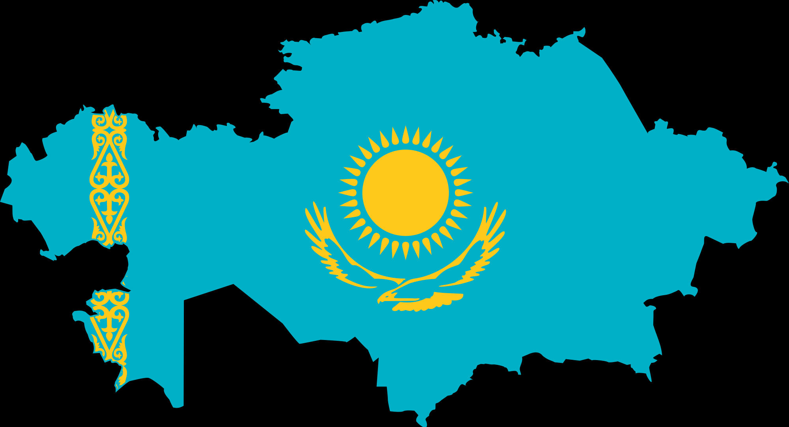

Ту
 Елтаңба
Елтаңба
 Астана
Астана
jhfw
 ҚАЗАҚСТАН
ҚАЗАҚСТАН
jhfw
jhfw
ҚАЗАҚСТАНҚазақстан (Дыбысы Қазақстан [qɑzɑqˈstɑn]), толық атауы Қазақстан Республикасы (Дыбысы Қазақстан Республикасы) — Шығыс Еуропа мен Орталық Азияда орналасқан мемлекет. Батысында Еділдің төменгі ағысынан, шығысында Алтай тауларына дейін 3 000 км-ге, солтүстіктегі Батыс Сібір жазығынан, оңтүстіктегі Қызылқұм шөлі мен Тянь-Шань тау жүйесіне 1 600 км-ге созылып жатыр. Қазақстан Каспий теңізі арқылы Әзірбайжан, Иран елдеріне, Еділ өзені және Еділ-Дон каналы арқылы Азов теңізі мен Қара теңізге шыға алады. Мұхитқа тікелей шыға алмайтын мемлекеттердің ішінде Қазақстан — ең үлкені.
Елтаңба
Астана
Қазақстан бес мемлекетпен шекаралас, соның ішінде әлемдегі құрлықтағы ең ұзын шекара, солтүстігінде және батысында Ресеймен — 7591 км құрайды. Оңтүстігінде: Түрікменстан — 426 км, Өзбекстан — 2354 км және Қырғызстан — 1241 км, ал шығысында: Қытаймен — 1782 км шектеседі. Жалпы құрлық шекарасының ұзындығы — 13394 км. Батыста Каспий теңізімен (2000 км), оңтүстік батыста Арал теңізімен шайылады[8].
2022 жылдың 1 маусымдағы елдегі тұрғындар саны — 19 222 625[4], бұл әлем бойынша 62-орын. Жер көлемі жағынан әлем елдерінің ішінде 9-орын алады (2 724 902 км²).
Елдің елордасы — Астана қаласы. Мемлекеттік тілі — қазақ тілі. Ресми тілі — орыс тілі.
Қазақстанның ұлттық құрамы алуан түрлі. Халықтың басым бөлігін тұрғылықты қазақ халқы құрайды, пайыздық үлесі — 70,18%[9], орыстар — 18,42%, өзбектер — 3,29%, украиндар — 1,36%, ұйғырлар — 1,48%, татарлар — 1,06%, басқа халықтар 5,38% [10]. Халықтың 75% астамын мұсылмандар құрайды, православты христиандар — 21%, қалғаны басқа да дін өкілдері.[11]
Экономикалық көрсеткіштері бойынша дамушы экономика ретінде қарастырылады. Елдің жалпы ішкі өнімі ЖІӨ (номинал) = $205,539 млрд (2018). Экономиканың негізгі бағыты — отын-энергетика саласындағы шикізат өндіру, ауыл шаруашылығы (егіншілік). Елдің негізгі валютасы — теңге.
1991 жылдың 16 желтоқсан күні КСРО-ның ыдырауына байланысты өз егемендігін жариялады және халықаралық қауымдастық тарапынан тәуелсіз мемлекет ретінде мойындалды. 1992 жылдың 2 наурызынан бастап БҰҰ-ның толыққанды мүшесі. Сонымен қатар Еуропадағы қауіпсіздік және ынтымақтастық ұйымына, Ұжымдық қауіпсіздік туралы шарт ұйымына, Шанхай Ынтымақтастық Ұйымына және Еуразиялық Экономикалық Қауымдастығы сияқты басқа да бірнеше халықаралық ұйымдардың құрамына кіреді.